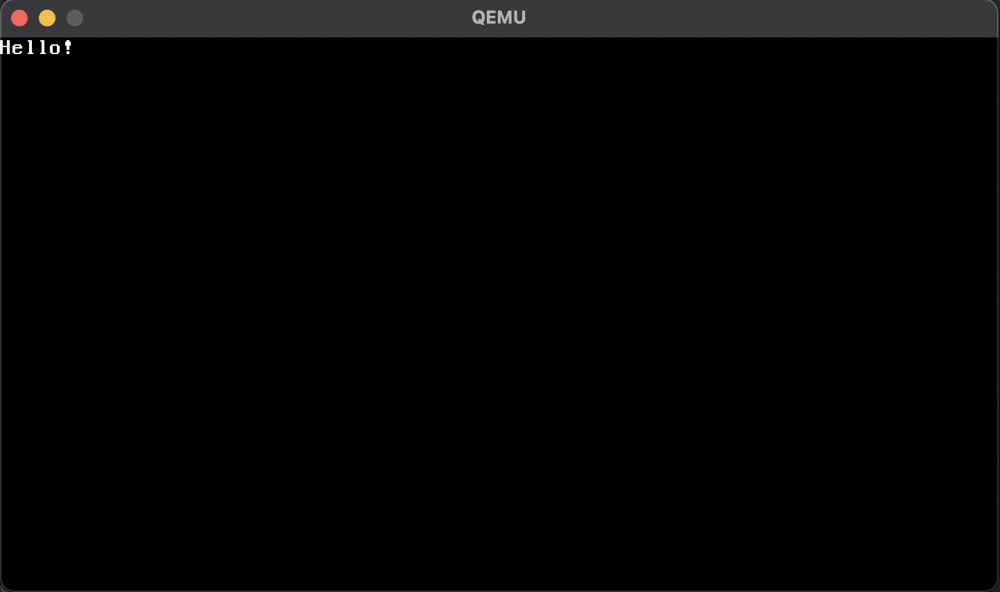

firstOS
firstOS is an operating system completely developed by Daniyal Warraich. It's useless right now, until I figure out GUI, mouse, and keyboard.
Features:
- Clear the screen
- Graphics mode
- the printf function
- Cursor
- Enable/disable
- Get/set position
© 2020 - by Daniyal Warraich